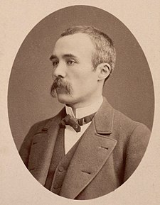

Woodrow Wilson (USA): The 28th President of the United States, Wilson played a key role in the post-war peace process and the creation of the League of Nations.
Kaiser Wilhelm II (Germany): The last German Emperor, whose aggressive foreign policy is often cited as one of the causes of World War I.

World War II Leaders
Adolf Hitler (Germany): The dictator whose policies led to World War II and the Holocaust.
Winston Churchill (UK): The British Prime Minister who led Britain through its darkest days of the war.
Franklin D. Roosevelt (USA): The 32nd President of the United States, who led the country during most of World War II.
Joseph Stalin (USSR): The Soviet leader whose Red Army played a crucial role in the defeat of Nazi Germany.